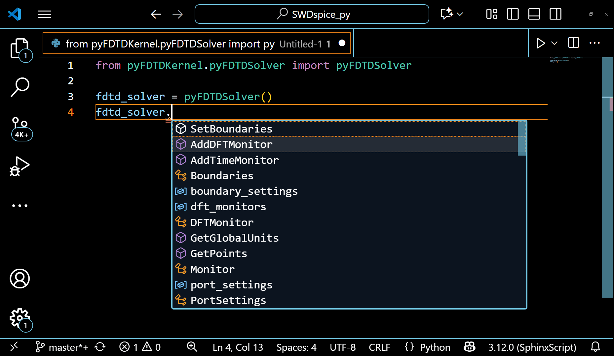
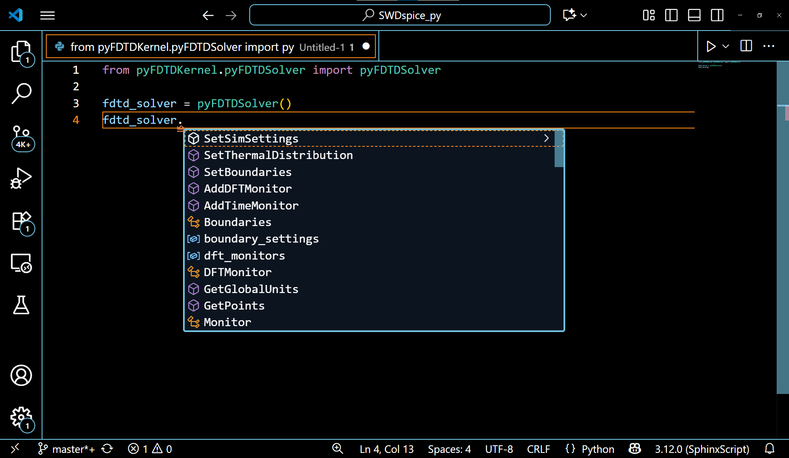

Installation Guide
Complete Installation Instructions for Windows and Linux
About This Guide
This guide provides comprehensive installation instructions for OptiOmega on both Windows and Linux operating systems. Choose the appropriate section below based on your platform.
Note
If you require assistance with Windows or Linux installation, contact Optiwave support:
Email: support@optiwave.com
Website: https://www.optiwave.com
Windows Installation
OptiOmega for Windows can be installed using the provided setup executable.
Important
NVIDIA GPU drivers: This product requires an Nvidia GPU with at least CUDA 12.0 support. Use the link below to check the CUDA capability of your GPU. https://developer.nvidia.com/cuda-gpus
Before you begin installation of OptiOmega, please make sure appropriate GPU drivers are installed. You can follow the instructions on Nvidia’s website at the link below on how to set up the drivers if they are not already set up in your system. https://www.nvidia.com/en-us/drivers/
Installation Steps
Step 1: Locate the Setup Executable
Find the setup.exe file in your OptiOmega installation package.
Step 2: Run the Installer
Double-click setup.exe to launch the installation wizard.
Step 3: Follow the Installation Wizard
Follow the on-screen prompts to complete the installation:
Step 4: Verify Installation
After installation completes, verify that OptiOmega has been installed successfully.
Setting Up Visual Studio Code
OptiOmega includes pre-configured Visual Studio Code settings file to streamline your development workflow. VSCode is the recommended way to use OptiOmega but it supports other Python IDEs as well.
Prerequisites
Install Visual Studio Code
If you don’t already have VS Code installed, download it from https://code.visualstudio.com/
Install Python Extension
Open Visual Studio Code
Click on the Extensions icon in the left sidebar (or press
Ctrl+Shift+X)Search for “Python” (published by Microsoft)
Click “Install”
Setting Up Your Project
Step 1: Create a Project Folder
Create a new folder for your OptiOmega project. For example, create a folder named MyProject in a location of your choice (e.g., C:\Users\UserName\OptiOmegaProjects\MyProject).
Step 2: Copy VS Code Settings
Copy the .vscode folder from C:\Program Files\Optiwave Software\OptiOmega 2\VSCode to your MyProject folder. The .vscode/settings.json file contains the correct Python interpreter path and other project-specific settings.
Step 3: Open Project in VS Code
Open Visual Studio Code and use File → Open Folder to open your MyProject folder.
Step 4: Select Python Interpreter
Note
This step is only necessary if the interpreter settings are not automatically picked up after copying the .vscode folder.
Open or create a Python file (e.g.,
test.py) in your projectAt the bottom-right corner of the VS Code window you should see the Python interpreter displayed (it will only appear when a Python file is open)
Click on the interpreter name to open the selection menu
Select the interpreter that shows OptiOmegaEnv
If the interpreter OptiOmegaEnv is not visible, you can manually navigate to the expected interpreter path and choose it as the default interpreter.
Expected interpreter path: C:\Users\UserName\OptiOmega2Python3.12.7\OptiOmegaEnv\Scripts\python.exe.
Important
The Python interpreter selection menu at the bottom-right corner will only appear when you have a Python file (.py) open in the editor.
Step 5: Verify Configuration
To verify everything is set up correctly:
Create a simple test file in your project (e.g.,
test.py)Add a simple import to test OptiOmega packages:
import pyOptiShared print("OptiOmega is configured correctly!")
Run the file (press
F5or use the Run menu)If the message prints without errors, your setup is complete!
Tip
VS Code Tip: You can press Ctrl+Shift+P and type “Python: Select Interpreter” to access the interpreter selection menu at any time.
Linux Installation
OptiOmega can be installed on Linux systems using either a scripted installation (recommended) or manual installation process. Both methods are documented below.
Important
NVIDIA GPU drivers: This product requires an Nvidia GPU with at least CUDA 12.0 support. Use the link below to check the CUDA capability of your GPU. https://developer.nvidia.com/cuda-gpus
Before you begin installation of OptiOmega, please make sure appropriate GPU drivers are installed. You can follow the instructions on Nvidia’s website at the link below on how to set up the drivers if they are not already set up in your system. https://docs.nvidia.com/datacenter/tesla/driver-installation-guide/
Scripted Installation (Recommended)
The scripted installation automates the entire installation process, making it the quickest and easiest method to get OptiOmega up and running.
Important
Supported Distributions: The scripted installation currently supports Ubuntu and Rocky Linux only.
Tested On:
Ubuntu 22.04
Ubuntu 24.04
Rocky Linux 9.7
For other Linux distributions, please use the Manual Installation method below.
Prerequisites
Warning
Root or sudo access is required for installation.
Required Files
Ensure you have the following files in your installation directory:
install_dependencies.sh- System dependencies installerinstall_optiomega.sh- OptiOmega product installer scriptinstall_licensing.sh- OptiOmega licensing installer scriptPython-3.12.7.tgz- Python source tarballrequirements.txt- Python package dependenciesbin/- OptiOmega source filesdependencies/- Offline Python packagesdocumentation/- Documentationtests/- Test scriptslicensing_drivers/- Licensing Drivers
Installation Steps
Follow these steps to install OptiOmega using the automated scripts:
Step 1: Install System Dependencies
Run the dependencies installer script with sudo privileges:
sudo bash install_dependencies.sh
This script will automatically detect your Linux distribution and install all required build tools and libraries.
Step 2: Install OptiOmega
Run the OptiOmega installer script:
bash install_optiomega.sh
The installer will:
Build and install Python 3.12.7 with optimizations
Create a virtual environment
Install all Python dependencies
Copy OptiOmega packages and source files
Copy documentation and test files
Run verification tests
Display an installation summary
Tip
Installation Complete! If no errors were reported, OptiOmega has been successfully installed to: ~/Optiwave/OptiOmega2
Step 3: Install Licensing Drivers
Run the licensing driver installer script with sudo privileges:
sudo bash install_licensing_drivers.sh
Step 4: License Setup
Please refer to the instructions under LicensingDrivers/licensing_driver_installation.txt
Using the Installed Software
After installation, activate the virtual environment:
source ~/Optiwave/OptiOmega2/Python312/OptiOmegaEnv/bin/activate
Then run your OptiOmega scripts:
python your_script.py
Manual Installation
For advanced users or custom installations, follow the manual installation process below. The steps and commands in this guide may need to be modified depending on your Linux distribution
Prerequisites
Warning
Root or sudo access is required for installation. Some steps need elevated privileges to install system dependencies and configure the environment.
Required Files
Before beginning the installation, ensure you have the following files in your installation source directory:
requirements.txt- Python package dependenciesbin/- OptiOmega source filesdependencies/- Offline Python packagesdocumentation/- Documentationtests/- Test scriptslicensing_drivers/- Licensing Drivers
System Dependencies
Install the required build dependencies for your distribution. See the following links for further information on how to install dependencies and build python.
https://devguide.python.org/getting-started/setup-building/#build-dependencies
https://devguide.python.org/getting-started/setup-building/#compile-and-build
Select the appropriate commands for your Linux distribution. Please refer to the links above for other Linux distributions:
Note
Before starting the installation process it is recommended to update your system to make sure the latest packages are installed.
Ubuntu/Debian
sudo apt update
sudo apt install -y build-essential wget curl llvm make \
libssl-dev zlib1g-dev libffi-dev libbz2-dev libreadline-dev \
libsqlite3-dev libncurses5-dev libncursesw5-dev xz-utils tk-dev libomp5 libglu1-mesa
Rocky/RHEL/CentOS
# Base packages
sudo dnf install gcc openssl-devel bzip2-devel libffi-devel wget tar make
sudo dnf groupinstall -y "Development Tools"
# Additional libraries
sudo dnf install gdbm-devel tk-devel libX11-devel libXext-devel \
libXrender-devel libXrandr-devel libXcursor-devel libuuid-devel \
ncurses-devel sqlite-devel readline-devel libnsl epel-release dkms mesa-libGLU
sudo dnf install -y libomp && ln -s /usr/lib64/libomp.so /usr/lib64/libomp.so.5 && ldconfig
Installation Steps
Step 1: Set Installation Variables
Define the installation paths. You can adjust these to match your preferred directory structure:
export INSTALL_DIR="$HOME/Optiwave/OptiOmega2"
export PYTHON_VERSION="3.12.7"
export PYTHON_PREFIX="$INSTALL_DIR/Python312"
export VENV_FOLDER="$PYTHON_PREFIX/OptiOmegaEnv"
Set the source directory to your source directory path:
export SOURCE_DIR="/path/to/your/source/files"
Step 2: Create Installation Directory
Create the main installation directory structure:
mkdir -p "$INSTALL_DIR"
cd "$SOURCE_DIR"
Step 3: Extract and Build Python
Extract the Python source code and compile it with optimizations:
# Extract Python source
tar -xzf Python-${PYTHON_VERSION}.tgz
cd Python-${PYTHON_VERSION}
# Configure with optimizations
./configure --prefix="$PYTHON_PREFIX" --enable-optimizations
# Build (using all CPU cores)
make -j$(nproc)
# Install
make altinstall
# Clean up
cd ..
rm -rf Python-${PYTHON_VERSION}
Note
The make step may take 5-15 minutes depending on your system specifications. The --enable-optimizations flag improves runtime performance but increases build time.
Step 4: Create Virtual Environment
Set up an isolated Python environment for OptiOmega:
# Create virtual environment
$PYTHON_PREFIX/bin/python3.12 -m venv "$VENV_FOLDER"
# Activate the virtual environment
source "$VENV_FOLDER/bin/activate"
Step 5: Install Python Dependencies
Install dependencies from dependencies folder:
pip install --upgrade pip
pip install --no-index --find-links="$SOURCE_DIR/dependencies" \
-r "$SOURCE_DIR/requirements.txt"
Step 6: Install OptiOmega Packages
Copy the OptiOmega Python modules to the virtual environment’s site-packages directory:
# Get site-packages location
SITE_PACKAGES=$("$VENV_FOLDER/bin/python" -c \
'import site; print(site.getsitepackages()[0])')
cp -r "$SOURCE_DIR/bin/pyFDTDKernel" "$SITE_PACKAGES/"
cp -r "$SOURCE_DIR/bin/pyModeSolver" "$SITE_PACKAGES/"
cp -r "$SOURCE_DIR/bin/pyOptiShared" "$SITE_PACKAGES/"
Step 7: Copy Additional Files
Copy source files, documentation, and test scripts to the installation directory:
# Copy all source files
mkdir -p "$INSTALL_DIR/bin"
cp -r "$SOURCE_DIR/bin/"* "$INSTALL_DIR/bin/"
# Copy documentation
mkdir -p "$INSTALL_DIR/documentation/"
cp -r "$SOURCE_DIR/documentation/"* "$INSTALL_DIR/documentation/"
# Copy tests
mkdir -p "$INSTALL_DIR/tests"
cp -r "$SOURCE_DIR/tests/"* "$INSTALL_DIR/tests/"
Step 8: License Setup
Please refer to the instructions under LicensingDrivers/licensing_driver_installation.txt
Step 9: Run Tests (Optional)
Verify the installation by running the test scripts:
cd "$INSTALL_DIR/tests"
for test_script in *.py; do
[ -f "$test_script" ] || continue
echo "Running $test_script..."
python "$test_script"
if [ $? -eq 0 ]; then
echo "✓ $test_script passed"
else
echo "✗ $test_script failed"
fi
done
Directory Structure
After installation, your directory structure will look like this:
~/Optiwave/OptiOmega2/
├── Python312/
│ ├── bin/
│ │ └── python3.12
│ ├── lib/
│ ├── include/
│ └── OptiOmegaEnv/ # Virtual environment
│ ├── bin/
│ │ ├── activate
│ │ └── python
│ └── lib/
│ └── python3.12/
│ └── site-packages/
├── FEMFy/
│ ├── pyFDTDKernel/
│ ├── pyModeSolver/
│ └── pyOptiShared/
├── bin/ # OptiOmega source files
├── documentation/ # Documentation
└── tests/ # Test scripts
Uninstalling OptiOmega
To completely remove OptiOmega from your system:
rm -rf ~/Optiwave/OptiOmega2
Warning
This will permanently delete all OptiOmega files, including any custom scripts or data stored in the installation directory. Make sure to backup any important files before uninstalling.
Using OptiOmega
Running OptiOmega Without IDE
Before using OptiOmega, you must activate the virtual environment:
source ~/Optiwave/OptiOmega2/Python312/OptiOmegaEnv/bin/activate
Once activated, you can run your OptiOmega Python scripts:
python your_script.py
Setting Up Visual Studio Code
OptiOmega includes pre-configured Visual Studio Code settings file to streamline your development workflow. VSCode is the recommended way to use OptiOmega but it supports other Python IDEs as well.
Prerequisites
Install Visual Studio Code
If you don’t already have VS Code installed, download it from https://code.visualstudio.com/
Install Python Extension
Open Visual Studio Code
Click on the Extensions icon in the left sidebar (or press
Ctrl+Shift+X)Search for “Python” (published by Microsoft)
Click “Install”
Setting Up Your Project
Step 1: Create a Project Folder
Create a new folder for your OptiOmega project:
mkdir -p ~/OptiOmegaProjects/MyProject
cd ~/OptiOmegaProjects/MyProject
Step 2: Copy VS Code Settings
Copy the .vscode folder from your OptiOmega installation to your project folder:
cp -r ~/Optiwave/OptiOmega2/VSCode/.vscode ~/OptiOmegaProjects/MyProject/.vscode
The .vscode/settings.json file contains the correct Python interpreter path and other project-specific settings.
Step 3: Open Project in VS Code
Open your project folder in Visual Studio Code:
code .
Or use File → Open Folder from the VS Code menu.
Step 4: Select Python Interpreter
Open or create a Python file (e.g.,
test.py) in your projectAt the bottom-right corner of the VS Code window you should see the Python interpreter displayed (it will only appear when a Python file is open)
Click on the interpreter name to open the selection menu
Select the interpreter that shows OptiOmegaEnv
If the interpreter OptiOmegaEnv is not visible, you can manually navigate to the expected interpreter path and choose it as the default interpreter.
Expected interpreter path: ~/Optiwave/OptiOmega2/Python312/OptiOmegaEnv/bin/python
Important
The Python interpreter selection menu at the bottom-right corner will only appear when you have a Python file (.py) open in the editor.
Step 5: Verify Configuration
To verify everything is set up correctly:
Create a simple test file in your project (e.g.,
test.py)Add a simple import to test OptiOmega packages:
import pyOptiShared print("OptiOmega is configured correctly!")
Run the file (press
F5or use the Run menu)If the message prints without errors, your setup is complete!
Tip
VS Code Tip: You can press Ctrl+Shift+P and type “Python: Select Interpreter” to access the interpreter selection menu at any time.
Editing in VSCode
Below are some advantages of editing your code in the Visual Studio Code:
1. When any of the following classes : pyFDTDSolver, FDTDResults, FDTDModeData, etc., is used while defining your structure for simulation, defining your FDTD or Mode simulation settings, or extracting simulation results.
The VSCode editor automatically shows the methods under these classes and allows the auto-completion of the code. This also guides the python beginners to write a simulation code with ease.
The example of pyFDTDSolver class showing its various methods can be seen in the following gif:
{kind=link}

2. When any method of any class is used and the mouse is hovered over the brackets (), VSCode editor automatically shows the documentation for all the arguments/variables within that method. This aids in the completion of the code.
The documentation for arguments of different methods of the pyFDTDSolver is shown in the following gif:
{kind=link}

3. To visualize the results stored in the .HDF5 files directly from the VSCode, H5Web extension must be installed in the VSCode editor under the EXTENSIONS tab. Hit Ctrl + Shift + X anywhere in the VSCode window to open the extension tab.
In the search bar, enter H5Web and select install.
Troubleshooting
Build Failures
Issue |
Solution |
|---|---|
Missing SSL support |
Install |
Missing bz2 support |
Install |
Permission denied errors |
Use |
Compilation fails |
Ensure all development tools are installed for your distribution |
Virtual Environment Issues
- Cannot activate venv
Ensure Python was built correctly with all required dependencies
- Module not found
Verify packages were copied to the correct site-packages directory
- Import errors
Check that all dependencies in requirements.txt were installed successfully
- Permission errors
Ensure proper ownership and permissions were set
sudo chown -R $USER:$USER "$SOURCE_DIR" chmod -R u+rwX "$SOURCE_DIR"
Scripted Installation Issues
- Script not found
Ensure you are in the correct directory containing the installation scripts
- Permission denied when running scripts
Make sure the scripts are executable:
chmod +x install_dependencies.sh install_optiomega.sh